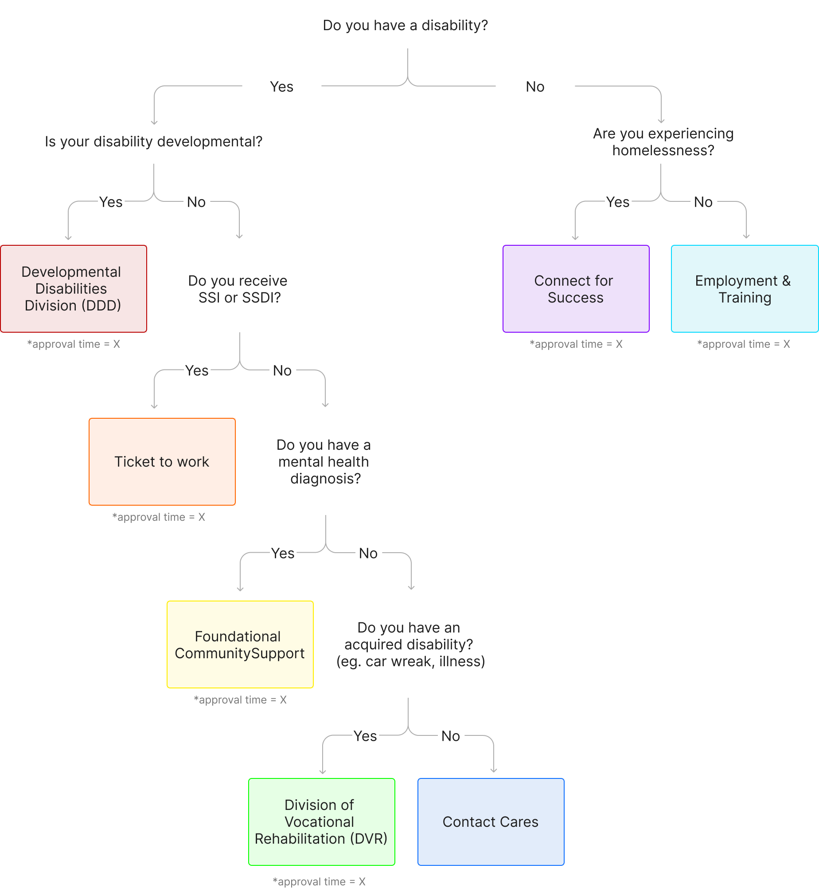

Our services
What sets Care of Washington apart is our personalized approach, we closely work with each client to understand their needs and coach them to achieve their goals.
- Vocational counseling
- Job readiness training
- Resume and cover letter writing
- Interview skills
- Application completion
- Using the internet
- Job search resources
- Skills assessment
- Job placement assistance
- Follow-up support
- Resource materials
- Job accommodation advice
- Education counseling
Independent living skill training
- Following a schedule
- Managing a daily routine
- Time management
- Money management
- Using public transportation
- Housing
- Mental health care
- Childcare
- Transportation
- ESL classes
How do I get services?
To receive our services, you'll need to be enrolled in one of the government programs listed below. Once you're approved, let your caseworker know you'd like to work with Cares of Washington.
1
Check program eligibility
2
Get approval for the services
3
Get personalized services
What program am I eligible for?
To guide you in understanding your eligibility, follow the decision tree questions.
